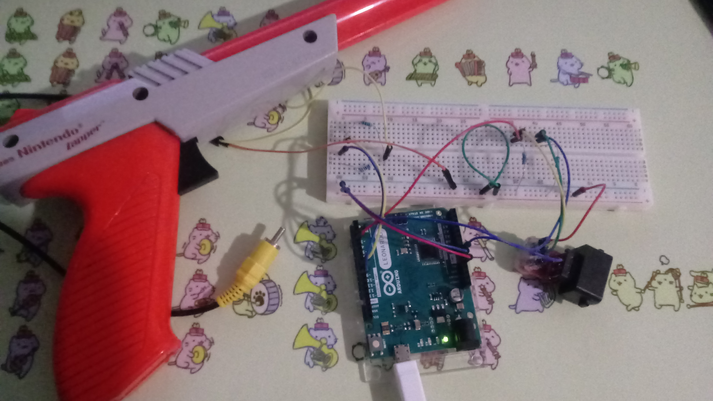

Cheesums
Cheesums
Novel Controller Projects

I love novel controllers. It fascinates me to see and play around with methods of control that don’t follow the traditional style of gamepad that is designed to be held in two hands by a couple of nubs. One classic style of more novel controllers is the light gun. And no light gun is more iconic than Nintendo’s NES Zapper.
Read More